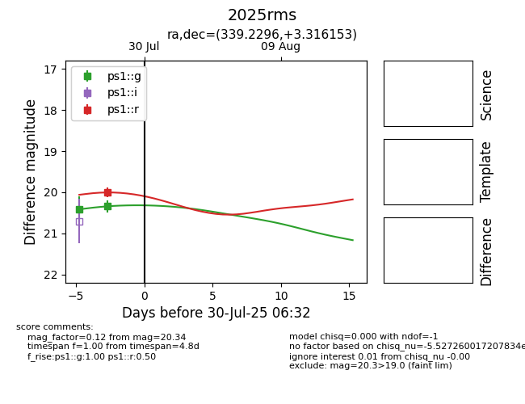

Target 2025rms at 2025-07-30 06:32, see:
YSE: ziggy.ucolick.org/yse/transient_detail/2025rms
alt names
2025rms (yse)
coordinates:
equatorial (ra, dec) = (339.2296,+3.31615)
galactic (l, b) = (70.8379,-45.51349)
photometry
last ps1::g=20.34, ps1::r=20.00
2 ps1::g, 1 ps1::r detections
